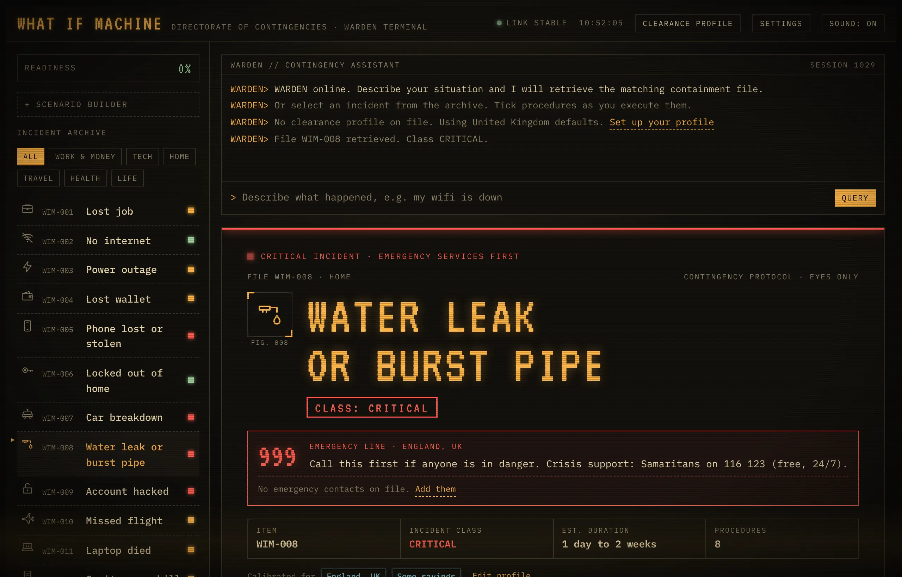
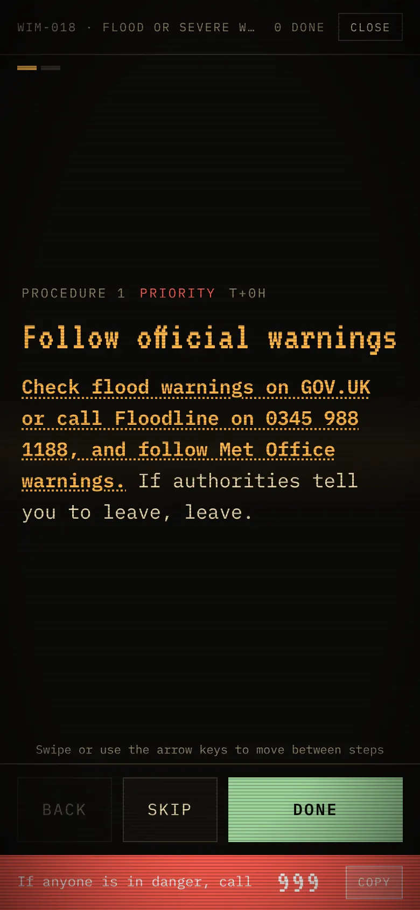
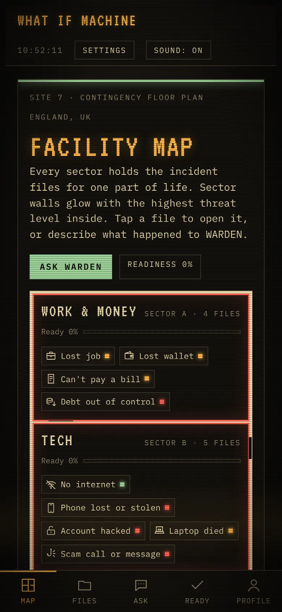

What if it goes wrong?
Lost job. No internet. Burst pipe. Stolen phone. Pick what happened and follow a clear, step-by-step plan, written like a classified containment protocol.
Free. Works offline. Nothing you enter leaves your device.


How it works
Three steps, built for the moment your head isn't working at full speed.
Say what happened
Type it in plain words, like my boiler's leaking, or tap a file on the facility map.
Follow the procedure
A flowchart shows every step and every fork. Guide mode walks you through one big step at a time.
Keep a record
Incident mode timestamps what you did, ready to paste to an insurer, landlord, or employer.
What's on file
22 scenarios across work, home, tech, travel, health, and life, each with its own procedure and prep checklist.
Emergency number on every critical file
Medical, mental health, and safety files point you to emergency services and crisis lines before anything else.
Your country, your nation
Numbers and rules for England, Scotland, Wales, Northern Ireland, Ireland, the US, Canada, Australia, and New Zealand, each linked to its source.
Weather and flood alerts
Met Office warnings and Environment Agency flood alerts for your area raise the threat level on the files that matter.
One step at a time
Big text, big buttons, swipe between steps. The emergency number stays pinned at the bottom.
Prepare before it happens
Each file has things to do in advance, like finding your stopcock. A readiness score tracks your progress.
Write your own
Build procedures for your own life, like "boiler fails at the rental flat", and share them with friends as a file.
Less noise when it counts
No flicker, alarms, or effects, and larger text. Turns on by itself for medical, bereavement, and mental health files.
Works with no signal
Once you've opened it, it loads without internet. That's when you need it most.
Add it to your phone
It installs like an app, with no app store and no account.
iPhone (Safari)
- Open the terminal.
- Tap Share, then "Add to Home Screen".
Android (Chrome)
- Open the terminal.
- Tap the menu, then "Install app".
Your privacy
- Your profile, contacts, ticks, and logs are stored only in your browser.
- For flood alerts, only the first half of your postcode is looked up.
- No accounts, tracking, or ads.

Add your country
Every country has different emergency numbers, helplines, and rules. If yours is missing or out of date, you can add it.
The contribution guide explains how to add a country's numbers and links, how to check them against official sources, and how to write a new scenario. Everything lives in one HTML file, so no build tools are needed.
Important
The What If Machine gives general guidance only. It isn't legal, financial, or medical advice, and rules change. If anyone is in danger, call your local emergency number first: 999 or 112 in the UK.